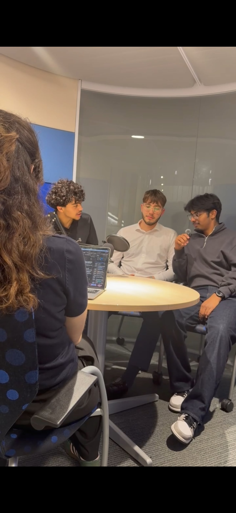

Week 01
Diagnostic visit
We spend a day in your space, measuring how it reads to the nose across its rooms, materials and traffic.
Sensory identity consultancy
We diagnose how your space smells, prescribe a scent that fits it, and hand you the evidence. One assessment, decided up front.
The method
Week 01
We spend a day in your space, measuring how it reads to the nose across its rooms, materials and traffic.
Week 02
A written prescription: the scent direction, where it belongs, and the mechanism behind each choice.
Week 03
We walk you and your team through the report in person, with the blotters, and leave you the artefact.


The evidence
| Approach | Spend | |
|---|---|---|
| Doing nothing | 0% | |
| Doing scent badly | −17% | |
| Basic scent, unadvised | +3% | |
| Proper scent selection | +10% | |
| Full scent strategy, right context | +23% |
The +23% figure is context-dependent — it shows up in service and wellness settings, and with a female-dominant clientele. It is a ceiling under the right conditions, not a default.
This is published research on how scent affects the way people experience and spend in a space — not a promise that any single scent will produce a specific result in yours. Doing scent badly is worse than doing nothing; the value is in choosing well.
Source: Roschk, H., & Hosseinpour, M. (2020). Pleasant Ambient Scents: A Meta-Analysis of Customer Responses and Situational Contingencies. Journal of Marketing, 84(1), 125–145.
Selected work


[TESTIMONIAL — replace with a real, consented, attributable client quote, or delete this block.]
The team

[Group photo caption — e.g. the team in Thessaloniki, 2026]
![[Consultant name]](assets/img/team/member-1.jpg)
[Name]
[Title — e.g. Lead Consultant]
[Bio — market they lead + specialism + one human sentence. 2–3 lines.]
![[Consultant name]](assets/img/team/member-2.jpg)
[Name]
[Title — e.g. Consultant]
[Bio — market they lead + specialism + one human sentence. 2–3 lines.]